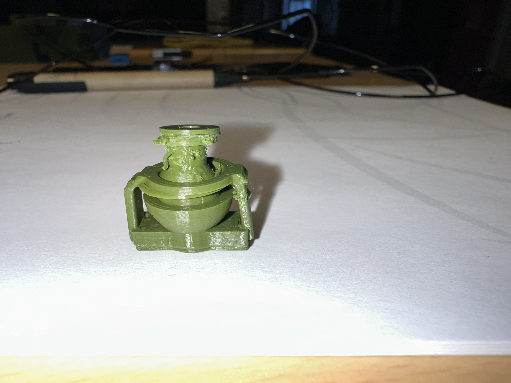

The Start
It took a long time to come up with a suitable idea for this project. At the beginning of this trimester I started to think about possible projects in general. Bionics in comibination of drones got my attention, i wnated to create a dragonfly like drone with one of my friends, because i think that the future of drones lays in bionics. So it seemed obvious that it would make sense to work towords that goal in this module. Unfortunately after drawing up some initial scetches I realised that it is almost impossible for me to create even a prototype without the electronics inside. My understanding of mechanical engineering is just not good enough to create the correct translation etc. I was unsure what kind of complexity is expected so I talked to Dr. Redlich and we came to the conclusion that i should focus on a design study of the extrem manuverbality of the wings.
After intial esearch of current approaches of companys like FESTO for example, I found out that most prototype rely on 3 or 4 joints to portrait the freedom of movement. But i saw that this technology is not flawless. I thought about an more efficent way of movement for the wing that required less joints. The idea of a ball joint seemed to be the ideal solution for the complexity of movement.
The First ball joints

Above shown was the first ball joint I found on thingiverse, it made a good first look and was really simple which i liked. But the thread was really hard for the 3D Printer and made it really unsmooth and the range of motion was really disappointing. Yet it gave me a rough idea of what i was looking for.
The second open source ball joint i have found was way bether. It also consisted of 3 parts which you can see below.

This ball joint was way better in terms of range of motion and smoothness. I was still not completly happy with this solution, it felt like there was a bether solution for even more freedom of movement. After i could not find a bether alternative of open source ball joints I decided to try and create my own ball joint in Fusion360.
My own ball joint
After some first sketches I started to create my own ball joint. The main idea was to create a ball joint that has the most freedom of movement possible while still being easy to print and assemble. After some first trials I came up with the following design:
 My Idea was to create a base that would have an narrow holding mechanism for the ball. This would reduce the area that limits the movement of the ball. It would need to be high enough so the ball would not fall out but with the most possible range of motion. I knew that my structure would be around a spheric object so i used the rotation function from Fusion360 to crate an proper surrounding for the ball. The next steps where clear: create a base,a ball and the possibilty to connect something with it i handled it all in Fusion360. altough I had some major problems with the software and was working really slow, due to the lack of experience, it took a really long time to get a final result that suited my idea.
My Idea was to create a base that would have an narrow holding mechanism for the ball. This would reduce the area that limits the movement of the ball. It would need to be high enough so the ball would not fall out but with the most possible range of motion. I knew that my structure would be around a spheric object so i used the rotation function from Fusion360 to crate an proper surrounding for the ball. The next steps where clear: create a base,a ball and the possibilty to connect something with it i handled it all in Fusion360. altough I had some major problems with the software and was working really slow, due to the lack of experience, it took a really long time to get a final result that suited my idea.
I used the cut out function to create the place where the ball sits. It is important that you scale down the ball so it can move smoothly. A downscaling to 99% seemed to fit really good in real life after some try and error.

After some testing and printing i came to the conclusion that my design was pretty good. The range of motion was way better than the previous designs and it felt really smooth. I was able to attach wings to the clip part and test the movement. It worked really well and i was happy with the result. Altough it came to some complications during orinting which you will see next.
The Thingiverse balljoint(to the left) was really badly printed. On another try with the wings(we will get to them later) i got a really weird fail, the prints started overlapping even though they should not. This issue occured many times so i knew ther had to be something of. The accuracy was of, the parts did not fit together and the surfaces were really rough. I woundered why this could be the case, so i changed the printer, the fillament and the PrusaSlicer code and it turned out pretty well when i started to print the oarts individual, but I am still convinced that my design is bether for my purpose.
I think my problems can be traced back to the movement of the printer nozzle. I have some pretty small individual structures and if the printer moves long distances the surfacetension of the small parts can breake and tehy get dragged along the nozzle on top of ther other parts. I did not figure out how to compensate for that till my very last prints, which you will see later on.
The wings
For the wings i took a simpler approach. First I looked up what species of dragonfly has the best capabilities when it comes to flying, even though every spevies was really good I stuck with the "southern giant darner" or "Austrophlebia costalis". Not only does it fly with tremendous speeds it also has extreme movability.
I drew tangential lines along the picture of the wings. Afterwords i extruded the surface area of the wings by 1mm. 1mm was the best fitting for some felxibility but the wing can still withstand a reasonable amount of stress before it plastically deformates. I cutted and extruded the edges of the wing that normally connect the wings to the muscle of the dragonfly, so that i can fit them more stable in the connection for the ball joint, which was a cylinder with a pasfit for the wing and an smaller cylinder to connect it again via pasfit to the balljoint.
Print errors
As mentioned before I had some major issues with the printing of the parts. The accuracy was off, the surface was rough and some parts even failed completely. I tried many different approaches to fix this issue. First I changed the printer from the Prusa Mini to the MK4, which has a better accuracy and a more stable buildplate(Which is kind of irrelevant because the whole structre moves when a printer is working). Then I changed the filament from but they all said that they were the same quality, yet every fillament gave me a different result. Finally I changed many settings in the PrusaSlicer software, like slowing down the print speed, changing the retraction setting. One of the biggest improvemnets was to print the parts individual, that reduced one major flaw. The "drag" of the nozzle, which is related to movement of the printerhead, was basically eliminated. Espacially with structures that have a low surface tension with the printbase that concluded in the dragging of for example the ball to the base of the balljoint. Therefore the whole print got messy and there was a spider like "web-building".After all these changes I was finally able to print the parts with a reasonable quality. The surface was still not perfect but it was good enough for my purpose.
So the major takeaways are:
- Print the parts individual
- Use a printer with high accuracy
- Use a good quality fillament
- Slow down the print speed
The final assembly
I decided to build an additional body for the balljoints to sit in. I build in some places to fixate the base of the balljoint and was quite happy that everything fitted together well, but i gathered some experience through out the process so i knew what i had to keep in mind.
I also tried if the manuverbality of the wing was how i imagined it and in comparission to the other balljoint it was absolutely superior, which you can see below.
Conclusion
All in all I am really happy with the result of my project. I was able to create a balljoint that has a superior range of motion compared to other open source designs. I learned a lot about 3D printing and the limitations of the technology. I also learned a lot about design and how to create functional parts. If I had more time I would have liked to create a full dragonfly prototype with all four wings and test the flight capabilities. But due to time constraints I had to limit myself to the design study of the balljoint and wings. Nevertheless I am really satisfied with my work and I think it is a good foundation for future projects in this area.
Future and possible Improvements
In the future I would like to improve the design of the balljoint even further. One possible improvement would be to create a locking mechanism that allows to fixate the ball in a certain position. This would be useful for testing purposes and for creating more stable structures. Another improvement would be to create a more complex wing design that better portraits the structure of real dragonfly wings. This would improve the flight capabilities and make the prototype more realistic. Finally I would like to experiment with different materials for the wings, such as flexible filaments or even fabric. This would allow for more realistic movement and better flight capabilities. But the biggest improvement for the future would be to try and create a mechanism that is able to power the movements of the wing, this would be a breaktrough for the realization of an actual flying drone.
Furthermore improvements:
- aluminium ball joint
- More complex wing design with an membrane
- Experiment with different materials for the wings
- Creating a mechanism to power the wing movements
- Creating a full dragonfly prototyp
- laser cutting the base structure of the wigns
Final Result